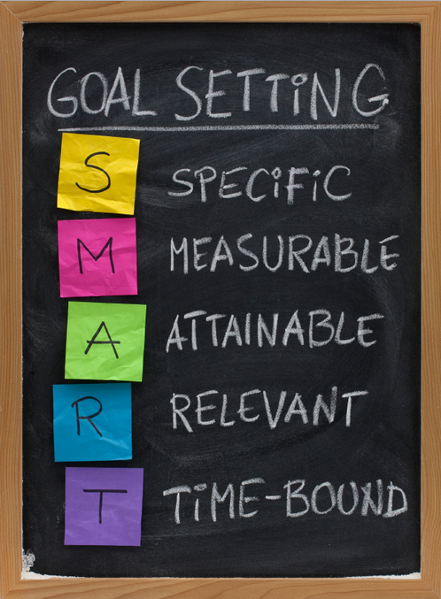

Balancing Short-Term and Long-Term Goals for Success
By: David
Introduction
In today's fast-paced world, it can be challenging to balance one's short-term and long-term goals while still achieving success. Many individuals struggle with focusing on immediate needs versus planning for the future, leading to stress and anxiety. At the same time, exclusively prioritizing long-term goals can result in neglecting the present, causing a lack of fulfillment in one's daily life. In this section, we explore how to balance short-term and long-term goals for success, providing tips, tools, and strategies for finding the perfect equilibrium. Let's dive in and discover how to create the perfect balance for your life and goals.
ad space
The Importance of Short-Term Goals
In life, it's easy to get caught up in long-term planning and future aspirations. However, it's crucial to set and achieve short-term goals along the way. Whether aiming for a promotion at work, increasing your savings account, or taking steps towards personal growth, short-term goals provide the structure necessary to achieve long-term success. In fact, studies show that individuals who set and achieve short-term goals are more likely to accomplish their long-term objectives.
Short-term goals serve many purposes. They allow you to track progress and stay motivated. They provide accountability, as completing smaller goals creates a sense of accomplishment and momentum to tackle larger objectives. Short-term goals also enable you to pivot and adjust your long-term planning based on your experiences and successes.
When setting short-term goals, it's crucial to be specific and realistic. Setting goals that are too broad or lofty can lead to feelings of overwhelm and ultimately cause people to give up. Consider breaking down larger aspirations into smaller, achievable goals. This allows you to focus on the present instead of getting lost in the future.
Overall, the importance of short-term goals should not be overlooked. They provide the foundation necessary to achieve success in both the short and long term. So, set your goals, stay focused, and enjoy the journey towards your personal and professional growth.
ad space
The Significance of Long-Term Goals
Imagine starting a journey without any destination in mind. Chances are, you'll find yourself lost, aimless, and unsure of where to go next. The same holds for personal and professional goals. Long-term goals provide direction, giving a sense of purpose and motivation to help you navigate the ups and downs of life.
In today's fast-paced world, short-term goals have become easy to define and achieve, providing a sense of immediate gratification. However, focusing solely on short-term goals often means neglecting the more significant life goals that give shape to your future.
The significance of long-term goals goes far beyond the overarching narrative of our lives. According to a study from the Harvard Business Review, individuals with specific long-term goals were found to be more likely to achieve and maintain success than those without long-term goals.
Long-term goals help with decision-making, planning, and prioritizing. They give a bigger picture to your choices, helping you make short-term sacrifices to achieve rewarding long-term results. The future can be uncertain, and having long-term goals can provide a sense of comfort and stability amidst a changing landscape.
In conclusion, short-term goals may be more manageable and tangible, but their significance pales in comparison to the bigger picture of long-term goals. By balancing both short and long-term goals, individuals can achieve success, maintain purpose, and shape their lives into something meaningful.
ad space
Strategies for Balancing Goals
In today's fast-paced world, balancing short-term and long-term goals can be a daunting task. We all have pressing needs that require immediate attention, but neglecting our long-term objectives can result in unfulfilled aspirations and missed opportunities. Achieving the right balance can be the key to success, both personally and professionally. This website explores the strategies successful individuals use to strike this balance and achieve their objectives.
Previous Subheadings:
- Why Balancing Short-Term and Long-Term Goals is Important
- The Cost of Focusing Too Much on Short-Term Goals
As we move forward and explore strategies for balancing goals, it is essential to recognize that this is not a one-size-fits-all solution. Different individuals have unique circumstances and objectives that require tailored approaches. It is also essential to understand that balancing goals is not a one-time activity but a continuous process that requires regular review and adjustment.
One critical strategy is to prioritize goals based on their urgency and impact on our lives. Some goals may require immediate attention, such as meeting work deadlines, while others can wait, such as planning a vacation. Understanding and prioritizing these goals help us focus our energies and resources on the most critical areas.
Another effective approach is to break down long-term goals into smaller, manageable tasks that can be accomplished incrementally. This approach helps us gain momentum and motivation as we achieve smaller objectives on the path to our ultimate aspirations.
Mentorship, accountability partners, and support networks can also be powerful tools in balancing goals. Having mentors or peers to hold us accountable and provide feedback can keep us motivated and ensure we are on track towards our objectives.
Lastly, it is important to acknowledge that balancing goals involves making trade-offs and sacrifices. We cannot do everything, and prioritizing one area of our lives over another will inevitably lead to sacrifices. Accepting and planning for these trade-offs can help us achieve our goals without feeling overwhelmed or burnt-out.
At the end of the day, balancing short-term and long-term goals is an ongoing journey that requires self-awareness, prioritization, and flexibility. By exploring the strategies outlined on this website, you are taking the first step towards achieving success in all areas of your life.
ad space
Benefits of Balancing Short-Term and Long-Term Goals
Achieving success requires more than just setting goals; it takes a strategic approach to balancing short-term and long-term goals. As we strive to accomplish both, it can be easy to become overwhelmed by the demands of today and forget about the bigger picture. However, finding harmony between the two is essential for growth and success. In this article, we delve into the benefits of balancing short-term and long-term goals, providing guidance and insight to help you achieve your goals without losing sight of the ultimate prize. From increased motivation to enhanced decision-making abilities, discover how the power of balancing your goals can help you reach your full potential.
ad space
Conclusion
Achieving Balance between Short-Term and Long-Term Goals: The Key to Sustainable Success
In a world that demands instant gratification and quick results, it's easy to become focused on short-term gains at the expense of long-term success. However, those who have achieved truly sustainable success know that balancing short-term and long-term goals is key to achieving lasting prosperity.
Throughout this website, we have explored the importance of developing a clear vision and setting achievable goals, both in the short-term and long-term. We've discussed the drawbacks of sacrificing one for the other, and the benefits of striking a balance between the two.
As we conclude our discussion on this topic, let us remind ourselves of the immense value of finding this balance. By developing a solid plan that incorporates both short-term and long-term goals, we can work towards achieving sustainable success that will last beyond the fleeting moments of immediate gratification.
It's important to keep in mind that finding this balance is not an exact science, but rather a process that requires constant self-reflection and adjustment. However, with the tools and insights that we have shared throughout this site, we're confident that you will be able to achieve the balance necessary for long-term success.
In conclusion, we encourage you to take the lessons and insights that you've gained here and apply them to your own personal and professional goals. By finding the balance between short-term and long-term goals, we're confident that you will be able to unlock your full potential and achieve the lasting success that you desire.
ad space